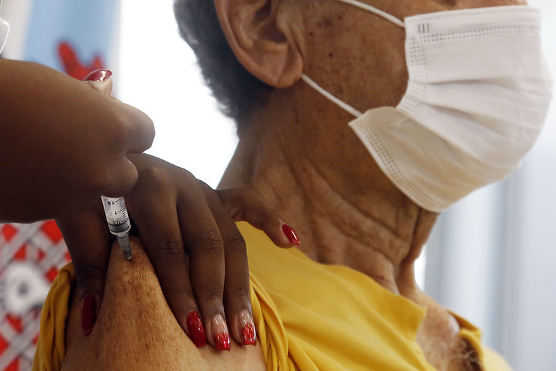
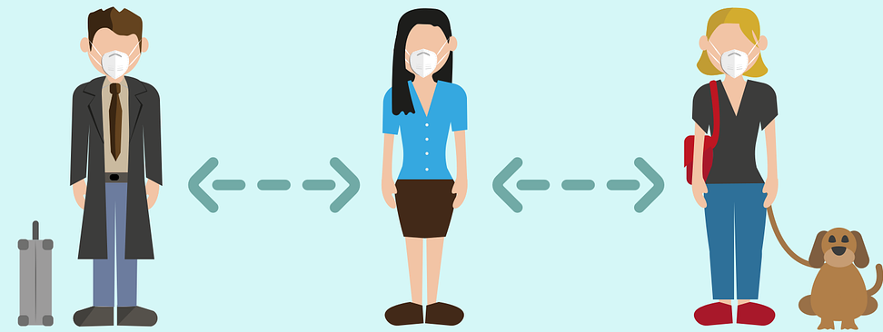

Vacinas aprovadas
Vários tipos diferentes de vacinas potenciais para COVID-19
estão em desenvolvimento, incluindo:
Vacinas de vírus inativados ou enfraquecidos , que usam uma
forma do vírus que foi inativada ou enfraquecida para não causar doenças, mas ainda assim gerar uma resposta
imune.
Com o início da vacinação contra o novo coronavírus (SARS-CoV-2) no Brasil,
muito provavelmente você já deve ter procurado por informações sobre os dois
imunizantes com uso autorizado pela ANVISA (Agência Nacional de Vigilância
Sanitária): a CoronaVac e a AstraZeneca/Oxford.

Coronavac
A vacina CoronaVac, desenvolvida pela empresa biofarmacêutica chinesa Sinovac
Biotech
e produzida no Brasil pelo Instituto Butantan, em São Paulo, tem como expectativa a produção de
cerca de 1 milhão de doses por dia. Essa vacina foi testada em mais de 12 mil voluntários entre 18 e
59 anos, não apresentou efeitos colaterais graves em nenhum deles e apenas 35% dos voluntários
apresentaram algum tipo de reação adversa, porém todas elas classificadas como em grau leve, como
dor local e febre baixa.
Oxford-Astrazeneca
A vacina britânica Oxford-Astrazeneca utiliza uma tecnologia biomolecular baseada no chamado “vetor
viral”, que consiste na utilização de um vírus modificado para estimular o sistema imunológico na
produção de anticorpos contra o novo coronavírus. Na fabricação da vacina, uma espécie de vírus
enfraquecido (adenovírus ChAdOx1), conhecido por causar gripe comum em chimpanzés, após ser
modificado
para não se multiplicar, carrega parte do material genético do SARS-CoV-2 responsável pela produção
de
uma proteína (“Spike”) que auxilia o vírus da COVID-19 a invadir as células humanas. Assim, após a
vacinação, o adenovírus começa a produzir essa proteína Spike, ensinando o sistema imunológico
humano
que toda partícula com essa proteína deve ser destruída. Assim, após a imunização adequada (2 doses
do
mesmo fabricante e com intervalo de 12 semanas entre as aplicações) o sistema imune do nosso
organismo
torna-se capaz de reconhecer e atacar rapidamente o coronavírus, caso seja infectado.
A vacinação está indicada somente às pessoas a partir de 18 anos e, após a aplicação de cada uma das
doses da vacina deve-se evitar a doação de sangue por 7 dias.
Butanvac
O Brasil acaba de entrar para o hall de países que contam com uma vacina feita totalmente “em casa”
para
o combate à pandemia do novo coronavírus. A Butanvac, nome do novo imunizante produzido pelo
Instituto
Butantan, foi anunciada em coletiva na manhã desta sexta-feira (26) por Dimas Covas, diretor da
entidade.
O imunizante 100% brasileiro vai utilizar a mesma tecnologia que já é aplicada na vacina da gripe. O
Instituto Butantan, que ficará responsável por sua fabricação, domina completamente essa plataforma:
é o
maior produtor do imunizante contra a gripe na América Latina e entrega 80 milhões de doses
anualmente.
Antes de ser autorizada para uso, uma candidata a vacina passa por três fases de testes clínicos em
humanos. A primeira etapa avalia a segurança da fórmula e possíveis reações adversas, bem como se
ela é
capaz de estimular a produção de anticorpos. A segunda fase permite determinar a dosagem necessária
e,
novamente, a capacidade de levar o organismo a produzir anticorpos, mas em um grupo maior. Na última
etapa, com milhares de participantes, são avaliadas a segurança e a eficácia da vacina.
Eficácia das vacinas:
-
Fabricante/desenvolvedor: Sinovac
-
A eficácia geral da vacina ficou em 50,38%
-
Método de administração: Injeção intramuscular
-
Aplicação de 2 doses
-
A vantagem da CoronaVac é a logística de armazenamento e distribuição, a temperatura de conservação exigida é entre 2 e 8°C.
-
As reações mais comuns são: dor no local da aplicação de dor de cabeça.
-
Fabricante/desenvolvedor: AstraZeneca, Universidade de Oxford
-
A eficácia geral da vacina ficou em 79%
-
Método de administração: Injeção intramuscular
-
Aplicação de 2 doses
-
A melhor vantagem é o fato de ser uma vacina que, de fato, o governo brasileiro já fez negociação com número de doses
A vacina Butanvac vai utilizar a mesma tecnologia da vacina contra a gripe
A ideia é que a vacina seja capaz de proteger a população contra a P.1
capacidade de produção de 100 milhões de doses por ano.
A aprovação da vacina dependerão do sucesso dos testes realizados em voluntários e da aprovação da Agência Nacional de Vigilância Sanitária (Anvisa).


Tratamento e medicamentos:
Atualmente, o tratamento para casos leves de covid-19 recomendado é muito parecido com o feito em outras
infecções respiratórias causadas por vírus, como a gripe.
O médico pode prescrever remédios para alívio dos
sintomas, como analgésicos para as dores e antitérmicos para controlar a febre. É importante notarmos que
esses medicamentos atuam nos sintomas, e não na causa da doença!
Além disso, é importante repouso e mais ingestão de líquidos para evitar desidratação. O médico pode
solicitar exames de sangue ou de imagem, como o raio-x, para avaliar a condição clínica do paciente.
Antibiotico não funciona
Os antibióticos não funcionam contra os vírus; eles só funcionam em infecções bacterianas.
COVID-19 é
causado por um vírus, portanto, os antibióticos não funcionam. Os antibióticos não devem ser usados como
meio de prevenção ou tratamento da COVID-19.